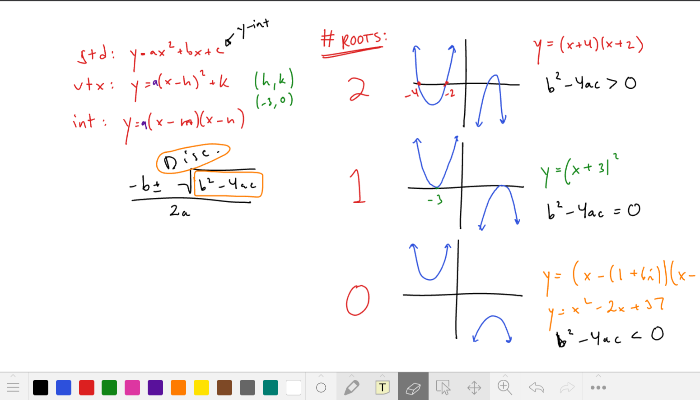

Joe Van Deren
Averaging
I teach high school and university math — one-on-one online, and through a free AP Calculus course on YouTube.
About
I graduated from Vanderbilt University in 2018 with bachelor's degrees in Mathematics and Engineering Science. Since graduation, I have traveled extensively and gained classroom experience teaching mathematics in Morocco and Bolivia, working at summer camps in Turkey and Argentina, and earning my teaching certificate while living in the United States. As a high school math instructor, I taught courses ranging from Geometry and Integrated Mathematics to IB Mathematics and AP Calculus and AP Statistics. Working with students with different strengths, challenges, and learning styles strengthened my ability to explain mathematical concepts in different ways, recognize where students are getting stuck, and adapt my approach to meet their individual needs.
I bring the same patient and empathetic approach to tutoring and aim to use the time in the most productive way possible. Giving students the encouragement and support they need to work through challenging concepts and build real understanding is central to my teaching practice, whether they are looking to move quickly through material or need more time to build confidence and fully understand the ins and outs of each concept.
What I love most about teaching and tutoring is breaking down the barriers around mathematics and making it accessible to every student, whether that means opening the door to studying STEM or simply helping someone stop being afraid of math.
Outside of teaching, I love to hike (I recently finished walking the Camino de Santiago in Spain where I walked for 36 days averaging 27 kilometers a day), play sports, and partake in various creative pursuits.
A free AP Calculus course on YouTube
I'm building a 50-video AP Calculus course, one topic at a time. Every video is free to watch.
The channel is where a lot of my teaching happens now. It has led to a job offer and to more than ten students choosing me as their tutor, and it doubles as a record of how I explain things.
One-on-one math tutoring
I work with students from middle school through adult learners. These are the subjects I teach most often.
AP courses
- AP Calculus AB
- AP Calculus BC
- AP Precalculus
- AP Statistics
IB Diploma
- IB Math AA SL
- IB Math AA HL
Test prep
- SAT Math
- ACT Math
University
- Differential Equations
- Linear Algebra
- Statistics
How it works
- Online and one-on-one
- We meet over Zoom or Google Meet and work through problems together on a digital whiteboard, so you can see every step as it happens.
- Built around your course
- Sessions follow your class, your exam calendar, and the things you're actually stuck on, from reviewing fundamentals to working through past AP and IB questions.
- Rates
- Contact me for rates. Tell me the subject and level and I'll get back to you.

Experience
Math teacher and tutor since 2019, first in international-school classrooms and now online. Before teaching, I worked in sales.
-
2022 – present
Private math tutor
100+ students and 1,500+ hours of one-on-one tutoring, independently and through Wyzant, Differential1, and Atomicmind.
-
2021 – 2022
AP and IB math teacher, international school, Bolivia
-
2019 – 2020
AP and IB math teacher, international school, Morocco
-
Before teaching
Traveling sales representative
Raised my monthly sales average by 40%.
-
Education
B.S. in Engineering Science and Mathematics, Vanderbilt University
Minor in Engineering Management.
-
Languages
Bilingual in English and Spanish
What students and parents say
All reviews are from Wyzant, where I tutor alongside my private practice.
Joe has a gift for making difficult concepts easier to understand, and he always meets me where I'm at. Whether it's reviewing fundamentals or tackling advanced AP questions, he makes sure I feel confident and supported every step of the way. What sets Joe apart is how much he genuinely cares about his students… Thanks to Joe, I felt really prepared for the AP Calc exam.
Joe is kind, thorough and an exceptional tutor! My daughter is taking AP AB Calc this year with a teacher who doesn't really teach. Joe has been a wonderful support and thanks to him she is doing well and confident in class. He really goes above and beyond to make sure she feels prepared.
He is a very knowledgeable tutor who is able to help you understand the 'why?' when it comes to Math instead of telling you to follow certain rules simply because they exist. He is also able to come up with manageable practice problems ON THE SPOT, which isn't an easy thing to do.
On their first meeting, Joe immediately understood my son's priorities and they got right to work. The time flew and my son rated it a 'ten.' He felt quite comfortable with Joe, who was incredibly knowledgeable, positive, and personable. Great fit!
Working with Joe made my statistics course a lot easier. I find myself understanding the material with his patience and efficiency, teaching in different ways and making time in his schedule to meet… Also, Joe's great demeanor makes it easy to ask questions.
Joe has done a great job helping with ACT review. Really appreciate his efforts with strategy, timing and studying tactics. Very knowledgeable and helpful on all subjects.
Get in touch
Parents, students, and anyone hiring: send a note and I'll get back to you.
If you're asking about tutoring, include the subject and level and a little about what you're working toward. If the form gives you trouble, email me directly at jgvanderen64@gmail.com.